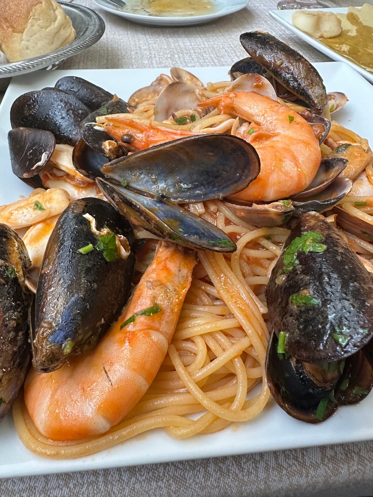
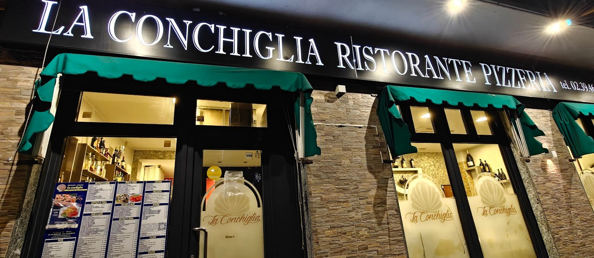
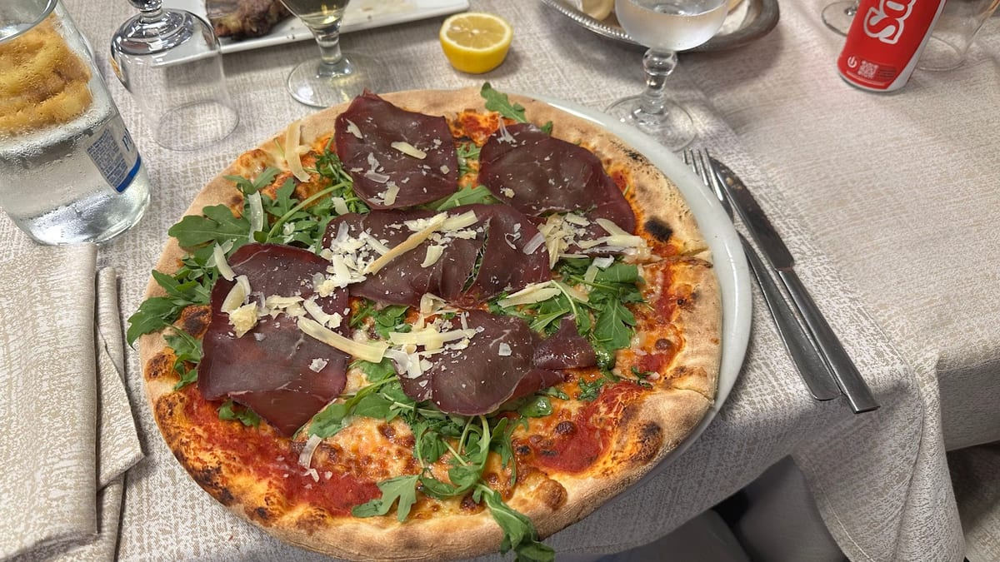
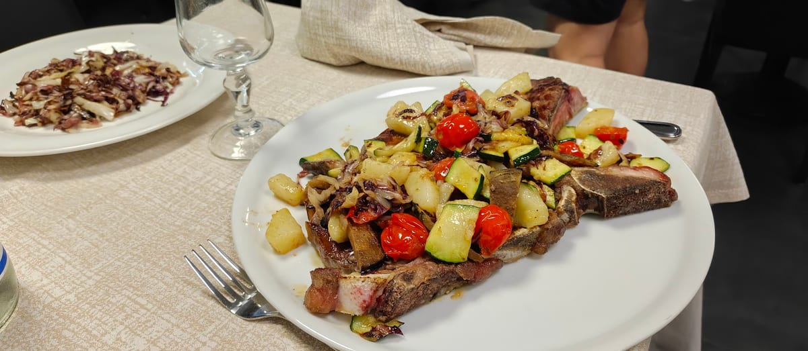
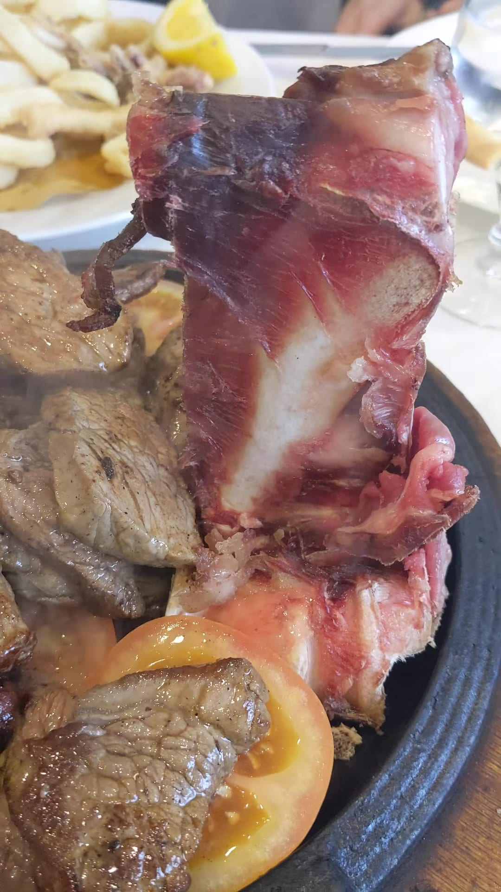
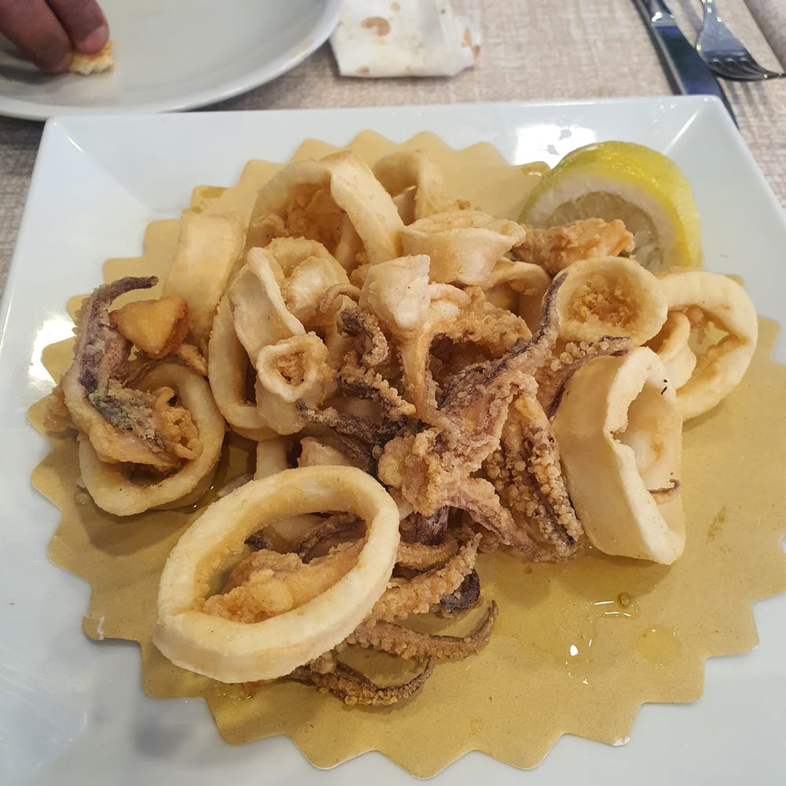
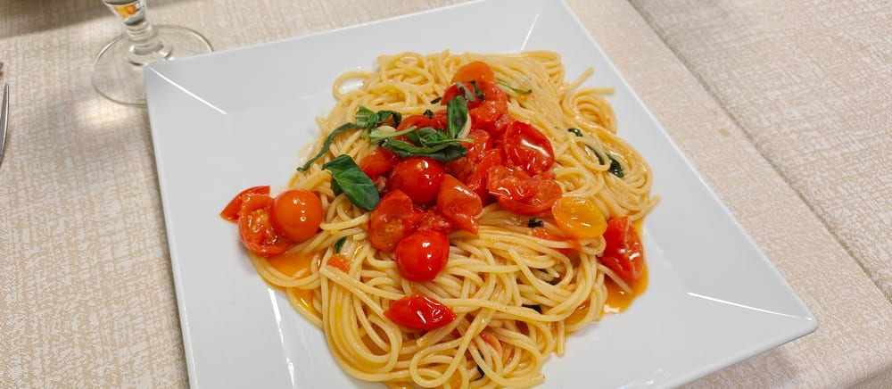
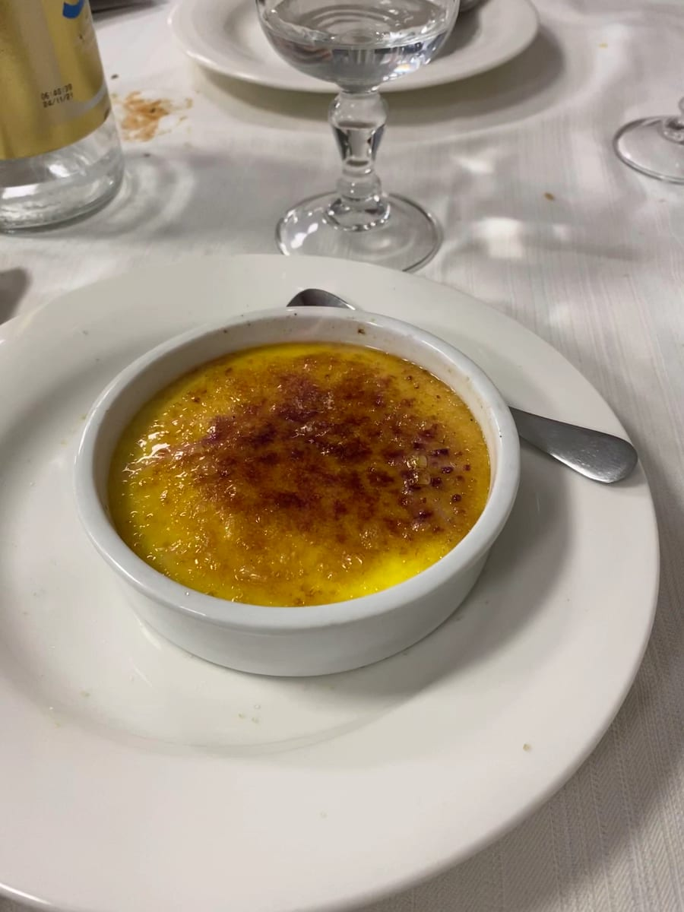
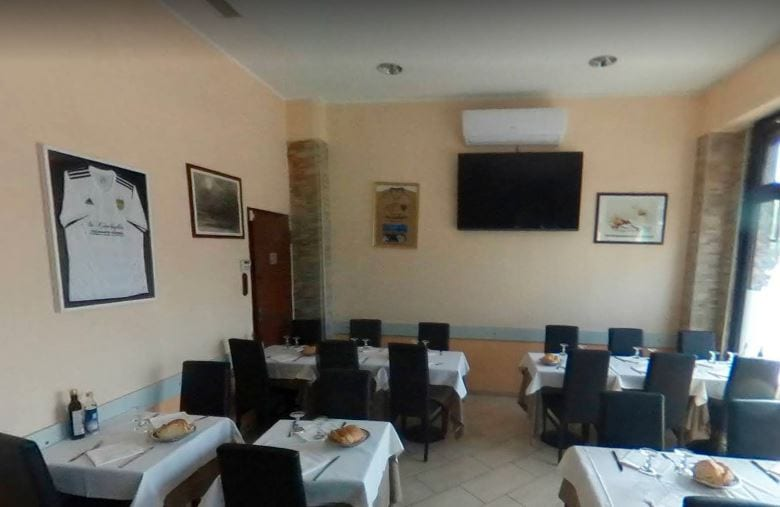

01
Dal mare
Spaghetti allo scoglio, fritto misto, scampi e vongole: il pescato che arriva in tavola generoso, come una volta.

4,0 · 1.927 recensioni
Trattoria e pizzeria di San Siro, a due passi dal Meazza — dal mare, dal forno, dalla griglia. Porzioni giganti, aperti tutti i giorni fino a mezzanotte.
Il menù
Non un posto solo: qui si mangia il pesce come al porto, la pizza come si deve e la carne alla brace. Scegli l'anima della serata.

Spaghetti allo scoglio, fritto misto, scampi e vongole: il pescato che arriva in tavola generoso, come una volta.

La pizza col cornicione alto, cotta come si deve: dalla margherita alle bianche più sfiziose. «Ottime pizze», dicono.

Fiorentina e costata alla brace, con le verdure grigliate. Carne vera, cottura giusta, porzioni da stadio.

Le porzioni
Le porzioni sono quelle di una volta: abbondanti, oneste, a prezzi che sembrano di un altro decennio. È il posto dove le famiglie di San Siro tornano da sempre, e i tifosi si fermano prima e dopo la partita.
«Big smiles and big portions. Prices are insanely low for the quality of food you get.» — Joël, recensione Google
In tavola




Dicono di noi
«Un ristorante autenticamente di quartiere: sembra di stare in un piccolo paese lontano. Prima delle 20 è vuoto, poi arrivano tutte le famiglie.»
Steve · Local Guide
«Big smiles and big portions. Prices are insanely low for the quality of food you get. Highly recommend the place.»
Joël
«Bel posto che serve piatti deliziosi a Milano. Porzioni generose a prezzi ragionevoli, personale gentile e disponibile!»
Matthias · Local Guide
«Ottime pizze, ottimo servizio, proprietari gentilissimi. Vasta scelta di dolci con porzioni generose.»
Google
Dove & quando
Via Novara 64, 20147 Milano · zona San Siro, a due passi dallo stadio
…
| Lunedì | 11:00 – 15:00 · 18:00 – 24:00 |
| Martedì | 11:00 – 15:00 · 18:00 – 24:00 |
| Mercoledì | 11:00 – 15:00 · 18:00 – 24:00 |
| Giovedì | 11:00 – 15:00 · 18:00 – 24:00 |
| Venerdì | 11:00 – 15:00 · 18:00 – 24:00 |
| Sabato | 11:00 – 15:00 · 18:00 – 24:00 |
| Domenica | 11:00 – 15:00 · 18:00 – 24:00 |
Aperti tutti i giorni · asporto e consegna a domicilio
Domande frequenti
Tre anime in un solo posto: pesce (spaghetti allo scoglio, fritto misto), pizza cotta nel forno e carne alla griglia (fiorentina, costata), con porzioni generose.
Aperti tutti i giorni, pranzo 11–15 e cena 18–24 (fino a mezzanotte).
Sì: oltre alla consumazione sul posto, facciamo asporto e consegna a domicilio. Chiama lo 02 3946 4148.
Sì, soprattutto nelle sere di partita al Meazza consigliamo di chiamare per prenotare un tavolo.
In Via Novara 64 a Milano, zona San Siro, a due passi dallo stadio Meazza.